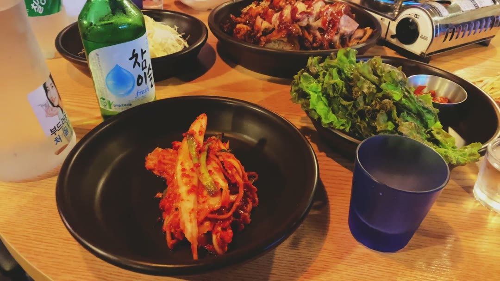
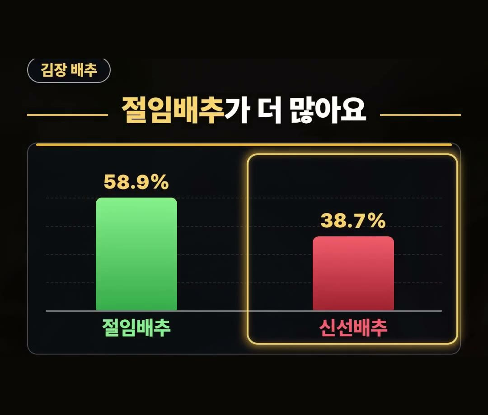
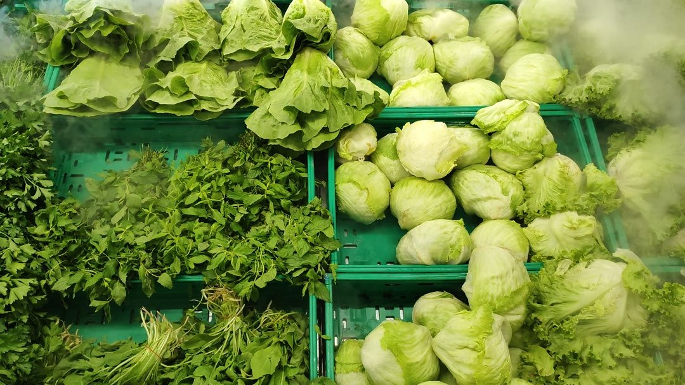
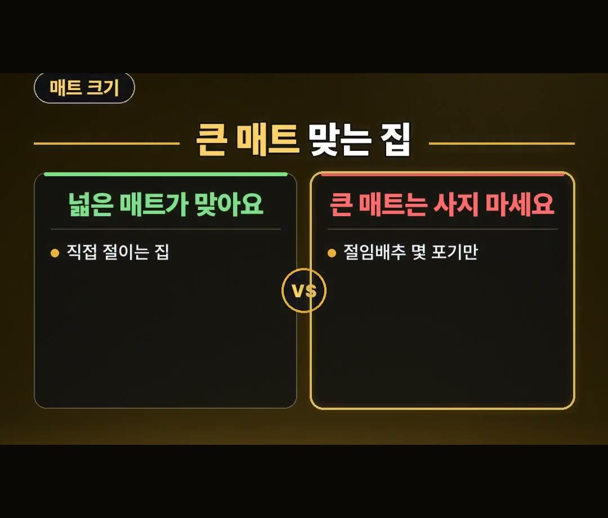
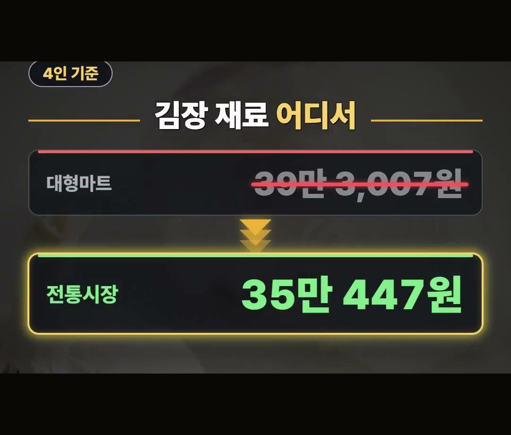

김장 매트, 큰 게 손해인 집과 살 때 볼 3가지 정리
※ 이 글에는 제휴 링크가 포함되어 있으며, 링크를 통해 구매하시면 일정 수수료를 받을 수 있습니다. (가격은 같습니다)
※ 이 포스팅은 쿠팡 파트너스 활동의 일환으로, 이에 따른 일정액의 수수료를 제공받습니다.
※ 이 콘텐츠는 토스쇼핑 쉐어링크 활동의 일환으로, 링크를 통한 구매가 발생하면 일정 수수료를 지급받습니다.
김장 매트를 사기 전에는 딱 3가지만 기억하면 됩니다.
식품용 표시, 펼칠 바닥 자리, 그리고 해마다 담그는 배추 양이에요.
이 글에서는 왜 배추 양부터 봐야 하는지, 2025년 조사 숫자와 함께 차례로 정리했어요.
2025년 4인 가구 배추 구매량은 평균 18.3포기로, 2020년 21.9포기보다 줄었어요.
매트 크기를 고르기 전에 이 숫자부터 떠올려 보세요! 🥬

김장 양부터 줄었어요
김장 매트 이야기를 하기 전에 김장 양부터 볼게요.
- 2025년 4인 가구 배추 구매량: 평균 18.3포기
- 2020년: 21.9포기
몇 해 사이에 4인 가구가 사는 배추 양이 줄었습니다.
담그는 양이 달라졌다면 매트 크기도 그 양에 맞춰 다시 생각해 볼 만해요.

절임배추를 사는 집이 더 많아요
직접 배추를 절이는 집도 줄었어요.
2025년 조사에서 김장 배추 구매자 가운데 고른 배추는 이렇게 나뉘었습니다.
- 절임배추: 58.9%
- 신선배추: 38.7%
절임배추를 고른 쪽이 신선배추를 고른 쪽보다 많았어요.
절임배추를 사는 집과 직접 절이는 집은 필요한 매트 크기가 다를 수 있어요.
이 이야기는 아래에서 이어서 정리할게요.

김장매트 추천 글을 보기 전에, 살 때 볼 3가지
김장 매트는 배추를 절이고 버무리는 판이에요.
고를 때 볼 점 3가지를 정리했습니다.
- 식품용 표시: 제품에 식품용 표시가 있는지
- 펼칠 바닥 자리: 집에서 매트를 펼칠 자리가 얼마나 되는지
- 배추 양: 해마다 몇 포기를 담그는지
김장매트 추천 글을 찾아보기 전에 이 3가지를 먼저 적어 두세요.
특히 배추 양과 펼칠 바닥 자리는 집마다 달라서, 같은 매트라도 맞는 집과 안 맞는 집이 갈립니다.

김장매트 대형이 맞는 집과 아닌 집
직접 절이는 집이라면 넓은 매트가 맞아요.
반대로 절임배추 몇 포기만 버무리는 집이라면 큰 매트는 사지 마세요.
- 직접 절이는 집: 넓은 매트가 맞아요
- 절임배추 몇 포기만 버무리는 집: 큰 매트는 사지 마세요
김장매트 소형을 찾고 계셨다면, 먼저 절임배추를 몇 포기 사는지 떠올려 보세요.
크기는 양부터 떠올린 뒤에 고르는 것이 순서예요.
넓은 매트를 고른다면 집에서 그만큼 펼칠 바닥 자리가 있는지도 같이 재 보세요.

아낄 곳은 재료예요
김장에서 아낄 곳은 매트보다 재료예요.
2025년 조사로 4인 기준 김장 재료 비용은 사는 곳에 따라 이렇게 나왔어요.
- 전통시장: 평균 35만 447원
- 대형마트: 39만 3,007원
같은 4인 기준 재료라도 장보는 곳에 따라 값이 달라집니다.
매트를 고르는 것과 함께, 재료를 어디서 살지도 미리 정해 두세요.
이 숫자는 2025년 조사의 4인 기준 평균이라, 집마다 담그는 양에 따라 실제 비용은 달라질 수 있어요.

약 50포기용 제품도 있어요
참고로 상품 설명에 따르면 중형, 약 50포기용 제품도 있다고 합니다.
2025년 4인 가구 배추 구매량이 평균 18.3포기였다는 점과 견줘 보고, 해마다 담그는 양에 맞춰 크기를 고르세요.
정리
- 2025년 4인 가구 배추 구매량은 평균 18.3포기로 2020년 21.9포기보다 줄었고, 2025년 조사에서 김장 배추 구매자 가운데 절임배추는 58.9%였어요.
- 김장 매트는 식품용 표시, 펼칠 바닥 자리, 배추 양을 보고 고르세요. 직접 절이는 집이면 넓은 매트가 맞고, 절임배추 몇 포기만 버무리면 큰 매트는 사지 마세요.
- 2025년 조사로 4인 기준 김장 재료는 전통시장 평균 35만 447원, 대형마트 39만 3,007원이었어요.
링크는 아래에 모아 두었어요.
📌 2026년 10월 기준 정보예요. 가격은 시기에 따라 달라질 수 있어요.
· 매일경제 김장 반조리 시대(한국농촌경제연구원 조사)
사진·영상사진·영상: Pexels (Anna Pou, L. Lum, Lily Lili, MART PRODUCTION, Numan Gilgil, ROMAN ODINTSOV)